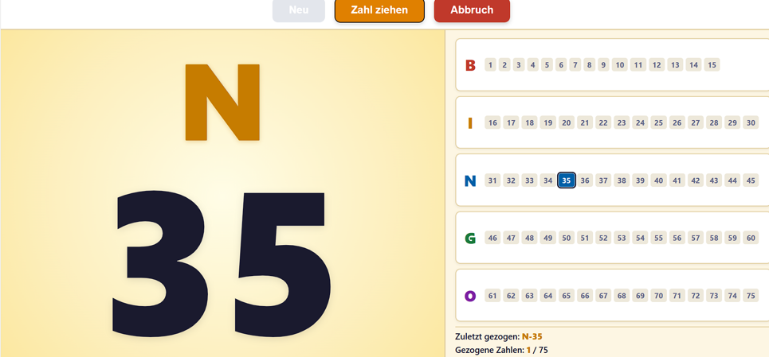

Dieses Programm ist ein digitaler Bingo-Zieher für den Beamer. Es zieht zufällig Zahlen von 1 bis 75 und zeigt sie groß auf dem Bildschirm an. Die Spieler*innen vergleichen die gezogene Zahl mit ihrem Bingo-Zettel.
| Schaltfläche | Funktion |
|---|---|
| Neu | Startet ein neues Spiel. Alle gezogenen Zahlen werden zurückgesetzt. |
| Zahl ziehen | Zieht die nächste Zahl. Alternativ kann die Leertaste gedrückt werden. |
| Abbruch | Bricht das laufende Spiel ab, ohne ein neues zu starten. |
| Erklärung | Zeigt der Gruppe auf dem Beamer einen Bingozettel und nacheinander ein waagerechtes, senkrechtes und diagonales Bingo. Weiter geht es per Klick oder Leertaste, nach dem letzten Bild schließt sich die Erklärung von selbst. Mit Esc kann jederzeit abgebrochen werden. |
Jede Zahl gehört zu einem Buchstaben:
| Buchstabe | Zahlenbereich |
|---|---|
| B | 1 – 15 |
| I | 16 – 30 |
| N | 31 – 45 |
| G | 46 – 60 |
| O | 61 – 75 |
Auf der rechten Seite sind alle 75 Zahlen sichtbar. Bereits gezogene Zahlen werden farbig hervorgehoben. Die zuletzt gezogene Zahl ist zusätzlich mit einem dunklen Rahmen markiert.
Mit der Leertaste lässt sich bequem die nächste Zahl ziehen, ohne zur Maus greifen zu müssen.
← Zurück zum Spiel